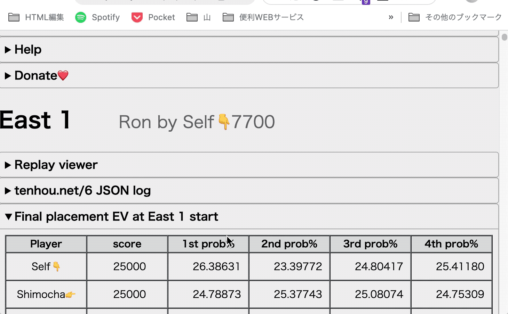

モー便 ｜麻雀AIレビューアー（モータル）の結果をフィルターする便利ツール
PC
-
ブックマークバーを表示しておき、下の緑ボタンをドラッグしてブックマークに追加
モー便1 -
レビュアーを開いているときに、ブックマークを実行

Android / iOS
Google Chromeを使っているとブックマークの呼び出しが便利です。
-
ボタンを押してコードをコピー
- このページでいいのでブックマークを作る。
- そのブックマークを編集します。
- コピーした文字をブックマークのURLとして保存。タイトルは呼び出しやすくつけてください。（モー便、モーベン）
-
URLバーからブックマークタイトルを検索して実行

ソースコード
inspired by This tweet
モータルくんでミスったとこだけ確認したいよーって人のために、ミスってるとこ以外を折りたたむコードを作りました。
— 新篠ゆう🐡バーチャル美少女プログラマー/麻雀VTuber (@yuarasino) October 20, 2022
ちょっと見やすくなると思います！
↓コピペ用https://t.co/ge1QtnS237 pic.twitter.com/w6eiwRhyuT